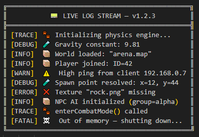
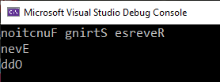

Testing and Debugging
Debugging code that uses Boost libraries follows the same general principles as debugging any other C++ code, but with the added assistance of test and logging specific libraries, and integration of these libraries into popular tools.
Debugging Strategies
Here are some strategies to consider:
-
Understanding the Library: Familiarize yourself with the specific Boost libraries that you’re using. Boost is a large and diverse collection of libraries, and each library may have unique behaviors, requirements, or quirks. Understanding the libraries you’re using will help you spot issues more easily.
-
Read the Boost Library Documentation: Boost has extensive and well-maintained documentation. If you’re having trouble with a specific library or function, start by looking up its documentation.
-
Use a Debugger: Tools like gdb or lldb on Unix-like systems, or the Visual Studio debugger on Windows, can be incredibly useful. You can step through your code line by line, inspect variables at any point, and generally see exactly what your code is doing.
-
Compile Warnings and Errors: Boost code will often make extensive use of templates, and errors in template code can sometimes result in complex and confusing compiler error messages. When confronted with such a message, don’t panic. Start at the top and try to decipher what the compiler is telling you. Often, the first few lines of the error message will contain the key to understanding the problem.
-
Unit Testing: Boost provides a testing framework, Boost.Test, which you can use to write unit tests for your code. Writing tests can help you catch errors and regressions, and it can also help you understand your code better. Boost.Test is integrated and available when using Microsoft Visual Studio. Refer to the Using Boost.Test section below.
-
Logging and Debug Output: Sometimes, it can be useful to have your program output diagnostic information while it’s running. You can use
std::cerr,std::clog, or a logging library to output information about your program’s state at key points. -
Code Review: If you’re still stuck, consider asking a fellow developer to review your code. Sometimes, a fresh pair of eyes can spot issues that you might have missed.
-
Online Communities: If you’re still stuck after trying the above steps, you can ask for help online. The Boost developers community is large and generally very helpful. There are forums, mailing lists, and Stack Overflow where you can ask for help.
Remember, debugging is a skill that gets better with practice. The more you work with the Boost libraries, the more you’ll learn about their idiosyncrasies and the better you’ll become at debugging issues with them.
Other Libraries
Other libraries that might help you with testing and debugging include:
-
Boost.Stacktrace: Stacktrace can be used to capture, store, and print sequences of function calls and their arguments. This can be a lifesaver when you need to debug complex code or post-mortem crashes.
-
Boost.Exception: This library enhances the error handling capabilities of C++. It enables attaching arbitrary data to exceptions, transporting of exceptions between threads, and more, thereby providing richer error information during debugging.
-
Boost.StaticAssert: Provides two macros,
BOOST_STATIC_ASSERTandBOOST_STATIC_ASSERT_MSG, which can be used to perform assertions that are checked at compile time rather than at run time. These can be used to catch programming errors as early as possible. -
Boost.Bind and Boost.Lambda: These libraries allow for the creation of small, unnamed function objects at the point where they are used. These can be useful in writing concise tests.
-
Boost.Mp11: A MetaProgramming Library, though not exclusively for testing or debugging, this library can be helpful in writing compile-time tests.
Using Boost.Log
Logging can be a helpful part of debugging, so consider using Boost.Log, as it provides a flexible and customizable logging system. It allows you to log messages from different parts of your application to various targets (e.g., console, file, etc.) and with different severity levels or categories.
Here is a simple example of how you might use Log:
#include <boost/log/trivial.hpp>
int main(int, char*[])
{
BOOST_LOG_TRIVIAL(trace) << "A trace severity message";
BOOST_LOG_TRIVIAL(debug) << "A debug severity message";
BOOST_LOG_TRIVIAL(info) << "An informational severity message";
BOOST_LOG_TRIVIAL(warning) << "A warning severity message";
BOOST_LOG_TRIVIAL(error) << "An error severity message";
BOOST_LOG_TRIVIAL(fatal) << "A fatal severity message";
return 0;
}Consider creating a Console app, and running the code:
[2025-07-22 20:24:58.955105] [0x0000094c] [trace] A trace severity message
[2025-07-22 20:24:58.970721] [0x0000094c] [debug] A debug severity message
[2025-07-22 20:24:58.970721] [0x0000094c] [info] An informational severity message
[2025-07-22 20:24:58.970721] [0x0000094c] [warning] A warning severity message
[2025-07-22 20:24:58.970721] [0x0000094c] [error] An error severity message
[2025-07-22 20:24:58.970721] [0x0000094c] [fatal] A fatal severity messageBOOST_LOG_TRIVIAL is a macro that logs a message with a specified severity level.
Severity levels are provided for log messages that you can use to indicate the importance or urgency of different logs. In basic usage, these severity levels are represented by an enumeration type:
namespace trivial = boost::log::trivial;
enum severity_level
{
trace,
debug,
info,
warning,
error,
fatal
};Each of these levels can be used to log messages of different importance:
-
trace: Very detailed logs, typically used for debugging complex issues. -
debug: Detailed logs useful for development and debugging. -
info: Information about the normal operation of the program. -
warning: Indications of potential problems that are not immediate errors. -
error: Error conditions that may still allow the program to continue running. -
fatal: Severe errors that may prevent the program from continuing to run.
You can customize these levels to fit your app, and you can also filter logs based on their severity level. For example, in a production environment, you might ignore trace and debug logs and only record info, warning, error, and fatal logs.
Careful logging of events, not too much information and not to little, will tell a story:

Using Boost.Test
Boost.Test is a robust, powerful library designed to facilitate writing unit tests in C++. It provides a framework for creating, managing, and running tests, enabling developers to ensure that their code functions as expected.
To start using the Test library, include its header in your test file:
#define BOOST_TEST_MODULE MyTest
#include <boost/test/unit_test.hpp>The BOOST_TEST_MODULE macro creates a main function for your test executable, meaning you don’t need to write one yourself.
Boost.Test uses test cases for testing. A test case is a function that performs the test. You can define one using the BOOST_AUTO_TEST_CASE(<test_case_name>) macro. The macro parameter becomes the test case’s name. For example:
BOOST_AUTO_TEST_CASE(MyTestCase) {
BOOST_TEST(true); // A simple test that always passes
}The result we all want:
*** No errors detectedIn this example, MyTestCase is a simple test case. The BOOST_TEST macro checks its argument and, if it’s false, reports an error.
Boost.Test provides a set of macros for different assertions:
-
BOOST_TESTfor basic testing. -
BOOST_CHECKfor non-critical conditions where the test continues even if the check fails. -
BOOST_REQUIREfor critical conditions where the test is aborted if the condition fails.
The suite feature is another strength. It allows you to group test cases, making your tests more organized and manageable. To create a suite, you can use the BOOST_AUTO_TEST_SUITE(suite_name) macro:
BOOST_AUTO_TEST_SUITE(MyTestSuite)
BOOST_AUTO_TEST_CASE(TestCase1) {
// Test code here
}
BOOST_AUTO_TEST_CASE(TestCase2) {
// Test code here
}
BOOST_AUTO_TEST_SUITE_END()In this snippet, MyTestSuite is a test suite that contains TestCase1 and TestCase2.
Another powerful feature is the fixture. Fixtures are useful when you want to perform setup and teardown operations for your tests. You can create a fixture class and use BOOST_FIXTURE_TEST_CASE to apply it to a test case:
struct MyFixture {
MyFixture() {
// Setup code here
}
~MyFixture() {
// Teardown code here
}
};
BOOST_FIXTURE_TEST_CASE(TestCaseWithFixture, MyFixture) {
// Test code here
}In this example, MyFixture is a fixture class. Its constructor and destructor are called before and after TestCaseWithFixture, respectively.
Boost.Test also supports parameterized and data-driven tests, exception handling, and custom log formatting.
To compile and run your tests, use your preferred C++ compiler to compile the test source file and the Test library. Then, run the resulting executable to execute your tests.
Boost.Test Tutorial
This topic is a step-by-step tutorial on how to get going with the Boost.Test library. This is a very substantial library with lots of functions and documentation. It is valuable to understand the concept of adding tests to a simple program, before venturing further.
Let’s get started with a trivial example.
Trivial Example
Here’s a simple example of a test suite with Boost.Test:
-
In Windows, perhaps use Visual Studio to create a C++ Console application. If not using Windows or Visual Studio, create a Console app, and add the paths to the Boost
includeandlibfolders appropriately.If using Visual Studio, in the project Properties for C++/General, locate Additional Include Directories and add the path to your Boost libraries. The path will be something like
C:\Users\<your path>\boost_1_88_0. Then, still in Properties, but now for Linker/General add to the Additional Library Directories with the path to your Boost lib folder. This path will be something likeC:\Users\<your path>\lib. -
Replace any boilerplate code with:
#define BOOST_TEST_MODULE MyTestSuite #include <boost/test/included/unit_test.hpp> BOOST_AUTO_TEST_CASE(MyTestCase) { BOOST_CHECK(1 + 1 == 2); } -
There is no need for a
mainfunction, as it is automatically generated by#include <boost/test/included/unit_test.hpp>whenBOOST_TEST_MODULEis defined. -
Run the program. You should get:
Running 1 test case... *** No errors detected -
Change the code to:
BOOST_AUTO_TEST_CASE(MyTestCase) { BOOST_CHECK(1 + 1 == 3); } -
Run the program. Do you now get a red error message:
Running 1 test case... ... error: in "MyTestCase": check 1 + 1 == 3 has failed *** 1 failure is detected in the test module "MyTestSuite"
This trivial example shows the two kinds of messages we might get. Now let’s move onto something with a bit more substance.
String Reversal Example
-
Create a Console app as you did in the previous example, or simply reuse the project already created.
-
Replace any boilerplate or leftover code in the .cpp file with:
#include <iostream> std::string revString(std::string str) { int n = (int) str.length(); for (int i = 0; i < n / 2; i++) { std::swap(str[i], str[n - i - 1]); } return str; } int main(int argc, char* argv[]) { std::cout << revString("Reverse String Function") + "\n"; std::cout << revString("Even") + "\n"; std::cout << revString("Odd") + "\n"; } -
Run the program, and ensure you get the three strings reversed appearing in a Console window:

-
Good, now let’s see how you would add Boost.Test functions to this.
-
Comment out your
mainfunction, as it will be replaced with the Boost.Testmainfunction, whilst the tests are running. It is wise not to delete yourmainfunction, as you will need it back when the testing is complete. -
Your .cpp file should now look like this:
#define BOOST_TEST_MODULE mytests #include <boost/test/included/unit_test.hpp> #include <iostream> std::string revString(std::string str) { int n = (int)str.length(); for (int i = 0; i < n / 2; i++) { std::swap(str[i], str[n - i - 1]); } return str; } /* int main(int argc, char* argv[]) { std::cout << revString("Reverse String Function") + "\n"; std::cout << revString("Even") + "\n"; std::cout << revString("Odd") + "\n"; } */ BOOST_AUTO_TEST_CASE(check_revString) { BOOST_TEST(revString("abcd") == "dcba"); BOOST_TEST(revString("12345") == "54321"); BOOST_TEST(revString("Even") == "nevE"); // Add a failure case BOOST_TEST(revString("Odd") == "DDO"); } -
Run the program. Do you get one error:
check revString("Odd") == "DDO" has failed? -
Correct the error by changing "DDO" to "ddO" in your code.
-
Run the program again. Do you now get
*** No errors detected? If so great, the tests have worked. -
Perhaps add test cases to the
BOOST_AUTO_TEST_CASEfunction, to check the case of an empty string, and for a single character string:BOOST_TEST(revString("a") == "a"); BOOST_TEST(revString("") == ""); -
Add and test any other strings that come to mind.
Next Steps
You can imagine now how you can add unit tests to your existing projects, checking the correct working of many of your functions.
And check out the full functionality of Boost.Test and Boost.Log.